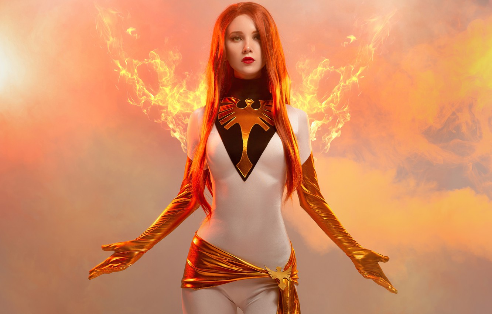

Phoenix is a superhero!

Джин Грей
– одна из участников первого состава команды
Людей Икс
. Важный персонаж для
Профессора Икс
, он для нее словно приемный отец, наставник.
Росомаха – ее надежный и верный друг.
Суперсила:
Телекинез, телепатия;
Умеет летать;
Контроль материи на атомном уровне;
Контроль над жизненной энергией, самовоскрешение;
Создание космической энергии;
Изменение пространства и времени, реальности.
Недостатки:
Не всегда справляется с собственной мощью, может перейти на темную сторону;
Спонтанные потери памяти.